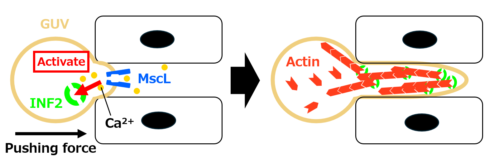

BIOMOD 2026 / aQtSOME / MOLECULAR DESIGN
Design.
From membrane tension to actin-driven deformation.
This page describes the molecular design of our molecular robot, aQtSOME. It covers the module that converts a mechanical stimulus into membrane deformation: MscL detects the rise in membrane tension that occurs when the robot is pressed into a narrow gap, the resulting Ca²⁺ influx activates INF2, and local actin polymerization pushes the leading edge of the membrane forward.
Overview of aQtSOME
We propose an amoeba-type molecular robot, aQtSOME, that induces actin polymerization in response to a mechanical stimulus and thereby produces a protrusion of its membrane. Previous artificial cell-type robots were driven by external inputs such as DNA signals or UV irradiation. In contrast, aQtSOME takes the force it receives from its surroundings as its input, so that it can change its shape autonomously without any external operation.

Key Components and Their Roles
aQtSOME consists of three components. The Body is the place where the mechanical stimulus is received, the Sensor converts that stimulus into a chemical signal, and the Actuator converts the chemical signal into force. The Body is a GUV, which turns an external force into membrane tension. The Sensor is MscL, which turns membrane tension into a Ca²⁺ influx. The Actuator is INF2 together with actin, which turns Ca²⁺ into membrane deformation.
Body — GUV (Giant Unilamellar Vesicle)
A GUV is a cell-sized vesicle made of a lipid bilayer that mimics a biological membrane. Because it can hold membrane proteins in its membrane and encapsulate soluble proteins in its lumen, it is widely used as the body of an artificial cell.
In aQtSOME, the GUV holds MscL in its membrane and encapsulates INF2, calmodulin, actin and the regulatory factors of actin in its lumen. At the same time, the membrane itself is the place where an external force is received as membrane tension. We also use DOPC as the main lipid and add DOPS so that INF2 can be localized to the membrane, as described later.
.png)
.png)
Sensor — MscL (Mechanosensitive Channel of Large Conductance)
MscL is a mechanosensitive channel that directly senses a rise in membrane tension and opens. In aQtSOME, it converts a mechanical stimulus, namely contact with a narrow gap, into a chemical signal, namely an influx of Ca²⁺.
MscL is a homopentameric transmembrane protein. When it senses a change in membrane mechanics, it opens a large non-selective pore about 2.5 to 3 nm in diameter, which allows water, ions, peptides and other molecules of up to 10 kDa to pass through [1]. MscL from E. coli opens at a membrane tension of about 12 nN/μm [2].
The fact that the pore is not selective for a particular ion works in favor of our design. We do not need to introduce a dedicated Ca²⁺ channel, because Ca²⁺ that is present at a high concentration outside the membrane flows into the lumen along its concentration gradient once the pore opens.
.png)
![Figure 2-4: Pipette aspiration assay of MscL G22S [3].](assets/design/image (4).png)
Actuator — INF2 and Actin
INF2 is a protein of the formin family that is involved in both the polymerization and the severing of actin. Because its activity is regulated by Ca²⁺/calmodulin, we can use the Ca²⁺ influx caused by the opening of MscL directly as the signal that starts actin polymerization.
In aQtSOME, INF2 works as the actuator that receives the chemical signal of Ca²⁺ and converts it into the generation of force by actin polymerization. The polymerized actin forms a cytoskeleton and produces a force that pushes the membrane from inside.
Profilin, which is an actin monomer-binding protein, keeps INF2 in its inactive state. By reducing the amount of free actin monomer, it allows the self-inhibition of INF2 to be established, which suppresses unintended polymerization before the stimulus.
![Figure 2-5: Activation mechanism of INF2 [4].](assets/design/image (5).png)
Directing Polymerization Force to the Membrane
To turn the force generated by actin polymerization into deformation of the membrane, where the polymerization takes place matters. If INF2 diffuses freely in the lumen, actin filaments elongate in directions that are not aligned, so most of the force is not transmitted to the membrane and instead cancels out. Only when the starting point of polymerization is fixed to the membrane does the direction of filament growth become defined with respect to the membrane, so that the force generated by polymerization acts as a force that pushes it. This chapter describes the designs we adopt for that purpose.
03-1. Anchoring INF2 to the Membrane with the Evectin-2 PH Domain
PH (pleckstrin homology) domains are generally known to bind phosphoinositides such as PIP₂, but specific binding has been confirmed for only about 10% of them. The PH domain of Evectin-2 (gene name PLEKHB1), a protein localized to recycling endosomes, is one of the exceptions: it binds phosphatidylserine (PS) but does not bind any phosphoinositide [5]. Because of this strict specificity, it is also widely used as a probe for visualizing the distribution of PS inside cells [6].
Why we use the Evectin-2 PH domain in aQtSOME
Unlike a cell membrane, the aQtSOME GUV is made mainly of DOPC and contains no phosphoinositides. If we used a conventional PIP₂-binding PH domain, we would have to add PIP₂ to the membrane. PS, in contrast, is available as DOPS, which is stable and inexpensive and can be mixed in at any ratio when the GUVs are prepared. We chose the Evectin-2 PH domain because it tethers INF2 to the membrane without requiring a complex membrane composition.
We therefore fuse the Evectin-2 PH domain to the N-terminal side of INF2, and include DOPS in the membrane in addition to DOPC.
.png)
03-2. Bundling Actin Filaments with Fascin
A single actin filament is soft, and on its own it can hardly push out a lipid bilayer. To deform the membrane, several filaments have to be bundled into a thick and stiff structure. Fascin (FSCN1) is a monomeric protein of about 55 kDa that has two actin-binding sites, located in the first and the third of its four β-trefoil domains. By crosslinking neighboring filaments at these two sites, it forms parallel bundles in which the filaments share the same polarity. Within a bundle the filaments are spaced about 8 nm apart, and in vitro a bundle contains about 17 filaments. In cells, fascin is the main crosslinking protein that builds the bundles forming the core of filopodia [7].
Why we use fascin in aQtSOME
The necessity of bundling for membrane deformation has been confirmed by reconstitution experiments using liposomes. Tsai and Koenderink showed that when actin and fascin are encapsulated in liposomes and polymerized, finger-like protrusions are formed, whereas filaments that are not bundled produce no protrusion. This is because a single actin filament generates at most about 1.5 pN, which is not enough to deform a lipid bilayer. At fascin-to-actin molar ratios of 0.05 to 0.2, about 60% of the liposomes were protruded, and the higher the ratio and the stiffer the bundle, the longer and straighter the protrusion [8]. Since aQtSOME also aims to push out the leading edge of a GUV, these results can be applied directly to our design.
We therefore add fascin to the lumen so that the actin filaments elongated by INF2 are gathered into parallel bundles. Bundling aligns the filaments with respect to the membrane and makes a stiff structure that does not buckle easily, so the force generated by polymerization acts more effectively as a force that pushes the membrane out.
.png)
Working Principle
aQtSOME is designed to convert a mechanical stimulus into membrane deformation through the following four steps.
.png)
Step 1. Mechanical Stimulation
When the GUV is pushed into a space narrower than its own diameter, such as a gap between cells, the leading edge of the membrane is compressed from both sides and locally stretched. As a result, the membrane tension rises only at the site of contact and not over the whole membrane. This local rise is what later concentrates actin polymerization at the leading edge.
.png)
Step 2. MscL Channel Opening
MscL senses the membrane tension that has risen at the leading edge and opens. Because the pore of MscL is not selective, Ca²⁺ that is present at a high concentration outside the membrane flows into the lumen of the GUV along its concentration gradient. At this step, the mechanical stimulus is converted into a chemical signal.
.png)
Step 3. INF2 Activation
The Ca²⁺ that has flowed in binds to calmodulin, and the Ca²⁺/calmodulin complex binds to the N-terminal region of INF2. This releases the DID/DAD-mediated self-inhibition, activating INF2 and starting actin polymerization. Since INF2 is tethered to the membrane, the polymerization proceeds near the membrane.
.png)
Step 4. Actin Polymerization and Membrane Deformation
The actin polymerization that proceeds near the membrane generates a force that pushes the membrane from inside as the filaments elongate. Because the polymerization is concentrated near the leading edge where Ca²⁺ flowed in, the force is also generated locally, and the leading edge of the GUV protrudes into the gap.
.png)
Through this series of steps, we aim to realize a molecular robot that converts mechanical information from its environment into membrane deformation. The key point of this design is that everything from the input to the output is completed within the molecular system, so that no external operating signal is required.
The mechanism described here is the one we assume in our design. The integration of each element and the function of the system as a whole still need to be verified by experiment.
References
[1] Mukherjee, N., Jose, M.D., Birkner, J.P., Walko, M., Ingólfsson, H.I., Dimitrova, A., Arnarez, C., Marrink, S.J. and Koçer, A. (2014), The activation mode of the mechanosensitive ion channel, MscL, by lysophosphatidylcholine differs from tension-induced gating. The FASEB Journal, 28: 4292-4302. https://doi.org/10.1096/fj.14-251579
[2] Sergei I. Sukharev, Wade J. Sigurdson, Ching Kung, Frederick Sachs; Energetic and Spatial Parameters for Gating of the Bacterial Large Conductance Mechanosensitive Channel, MscL. J Gen Physiol 1 April 1999; 113 (4): 525–540. doi: https://doi.org/10.1085/jgp.113.4.525
[3] Lap Man Lee, Allen P. Liu; A microfluidic pipette array for mechanophenotyping of cancer cells and mechanical gating of mechanosensitive channels. Lab Chip 2015; 15 (1): 264–273. https://doi.org/10.1039/c4lc01218f
[4] Miriam Lee, Aiman Jalmukhambetova, T. Emme Burgin, Henry N. Higgs; Regulation of the formin INF2 by actin monomers and calcium/calmodulin. J Cell Biol 2 February 2026; 225 (2): e202507147. doi: https://doi.org/10.1083/jcb.202507147
[5] Yasunori Uchida, Jun Hasegawa, Daniel Chinnapen, Takanari Inoue, Shin Okazaki, Ryuichi Kato, Soichi Wakatsuki, et al.; Intracellular phosphatidylserine is essential for retrograde membrane traffic through endosomes. Proc Natl Acad Sci USA 2011; 108 (38): 15846–15851. doi: https://doi.org/10.1073/pnas.1109101108
[6] Junya Hasegawa, Yasunori Uchida, Kojiro Mukai, Shirley Lee, Tatsuyuki Matsudaira, Tomohiko Taguchi; A Role of Phosphatidylserine in the Function of Recycling Endosomes. Front Cell Dev Biol 2021; 9: 783857. doi: https://doi.org/10.3389/fcell.2021.783857
[7] Silvia Jansen, Agnieszka Collins, Changsong Yang, Grzegorz Rebowski, Tatyana Svitkina, Roberto Dominguez; Mechanism of Actin Filament Bundling by Fascin. J Biol Chem 2011; 286 (34): 30087–30096. doi: https://doi.org/10.1074/jbc.M111.251439
[8] Feng-Ching Tsai, Gijsje H. Koenderink; Shape control of lipid bilayer membranes by confined actin bundles. Soft Matter 2015; 11: 8834–8847. doi: https://doi.org/10.1039/C5SM01583A